This is the anchor Fable reacts to. It is not a style guide and it prescribes no form. Every image here can be rejected. It exists so the first round of design has gravity instead of starting blind.
One page. One mark. 7,669 real 2024 diary days, one thread each, running 4 a.m. → 4 a.m., coloured by what that person was actually doing. The rope is solid at 3 a.m. and comes apart through the middle of the day. That contrast is the whole argument, and it has to land before anyone touches anything. Filtering the rope and pulling a single thread is the second act.
Four mechanics carry the existing work. This piece plays exactly one of them.
| Mechanic | Already shipped as | What it does to the viewer |
|---|---|---|
| Scale gasp | Deep Time — 115,000 px at true scale | a magnitude you cannot argue with |
| It's-about-you | Namesake (type a name) · Climate Fingerprint (type a city) | the data becomes yours |
| You-produce-the-insight | Statistical Illusions · By Example · The Real Price of Everything | you cause the finding yourself |
| Beautiful object | Climate Fingerprint's posters · Why Do They's blooms · Where America Moves' chord | worth looking at before it is read |
The object's coming-apart is the finding. Nothing else in the portfolio has a mark whose structural failure is the claim. It also borrows the timing of the scale gasp — one instant, no interaction required — while the gasp itself is about pattern, not size.
| Not a rerun of | Because |
|---|---|
| Climate Fingerprint | that is an atlas of 30+ posters, one per city, and it is parameterised by you; the comparison happens across objects. Here there is one object and the comparison is inside it — 3 a.m. and noon are in the same frame. |
| Where America Moves | that chord means nothing until you click a metro. Explore-first. Here the untouched view is already the claim. |
| Why Do They | its punch is words you read. This one is wordless; the punch is texture. |
| Deep Time | its gasp is magnitude. Here both ends of the frame hold the same 7,669 threads — nothing gets bigger, it comes apart. |
| Namesake / By Example | both need input before anything happens. This needs none. |
Everything else about the visual language is open. These three are frozen and bind any design:
C3 — the mark must ship a fine activity partition (12 published majors, or 13 with sleep split out). A coarse 3–5 colour "simplified" palette is forbidden: under a three-way scale the loosest hour moves to 6 p.m. and the headline becomes false.
C10 — one mandatory source line, one place: "7,669 real diary days · American Time Use Survey 2024 · each on its own local clock, 4 a.m. to 4 a.m." It is the attribution and it is the no-simultaneity defence. No live-clock or "right now" framing anywhere.
C11 — "Nobody's" is safe over the mark and unsafe without it. The picture has to show that noon is stratified, not scattered. Any surface that quotes the claim without the picture uses the standing replacement sentence instead.
22 real references, grouped by the problem each one speaks to. One line each on what specifically is worth stealing. Click any image for the full-page capture.
Thousands of real units drawn at once, where the eye reads order and disorder before it reads a chart.
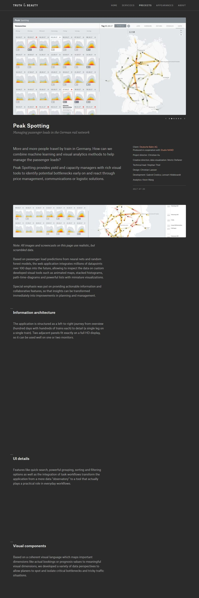
Peak Spotting
Truth & Beauty / Deutsche Bahn · source
Steal: a wall of day-shapes where every small mark is one real unit (a train run), so density reads as texture first and as data second. Also the chrome — near-black UI, the marks are the only colour.
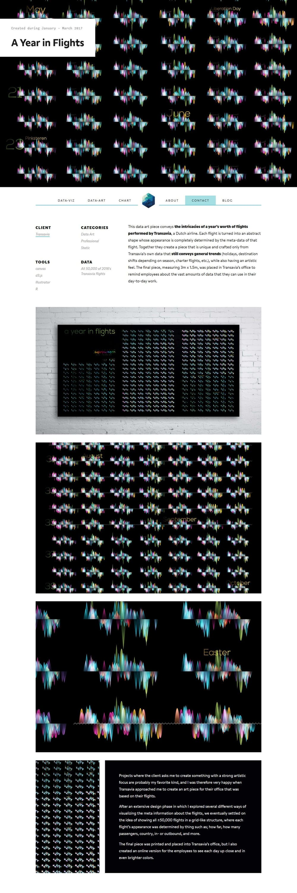
A Year in Flights
Nadieh Bremer / Transavia · source
Steal: per-unit marks tiled on black, each a spiky coloured strand-cluster — and it survives as a printed poster, which is the bar for "the mark carries it with nothing else on screen".
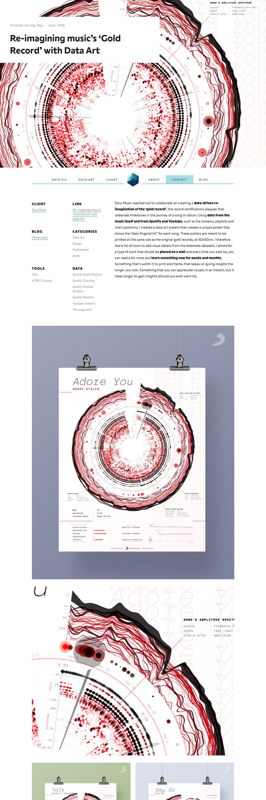
Re-imagining music's 'Gold Record'
Nadieh Bremer / Sony Music · source
Steal: a rope wound into a circle. Thousands of fine strands where the bundling is the image, on two colours — proof that density alone can carry a piece.
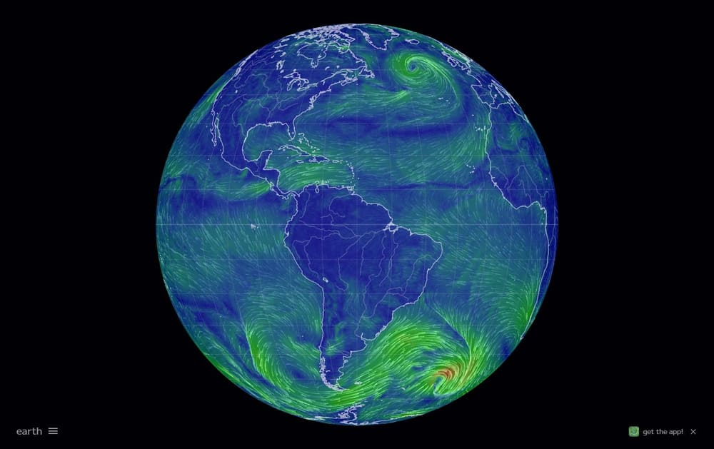
earth
Cameron Beccario · source
Steal: hairline particle strands on black where laminar and turbulent regions sit side by side and read instantly. This is the closest existing thing to the 3 a.m./noon event, and its UI is one word in a corner.
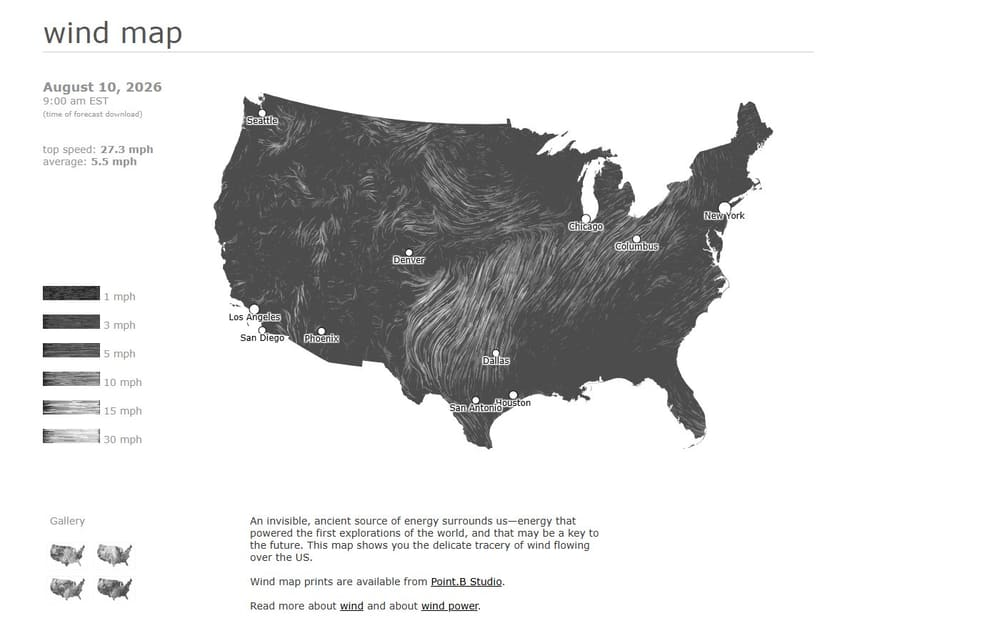
Wind Map
Fernanda Viégas & Martin Wattenberg · source
Steal: the same coherent-versus-turbulent read, in greyscale on white — the contrast is doing the work, not the palette. And its legend is a swatch of the texture itself rather than a key beside it.
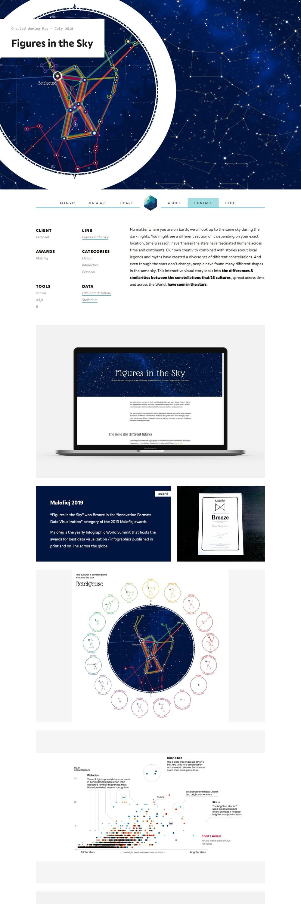
Figures in the Sky
Nadieh Bremer · source
Steal: thin luminous linework over a deep navy ground that stays legible at hairline width — how a dark ground buys you fine strands that a white ground would swallow.
The exploration layer (C11) has to be discoverable without instruction, and a single thread has to be worth landing on.
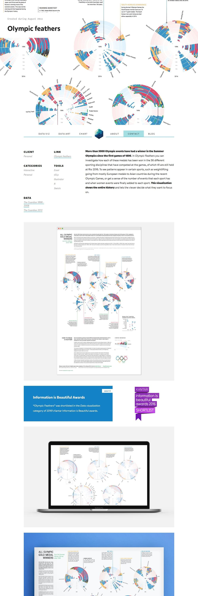
Olympic Feathers
Nadieh Bremer · source
Steal: a per-record mark that is beautiful in aggregate and still individually inspectable. That is the exploration layer's entire job.
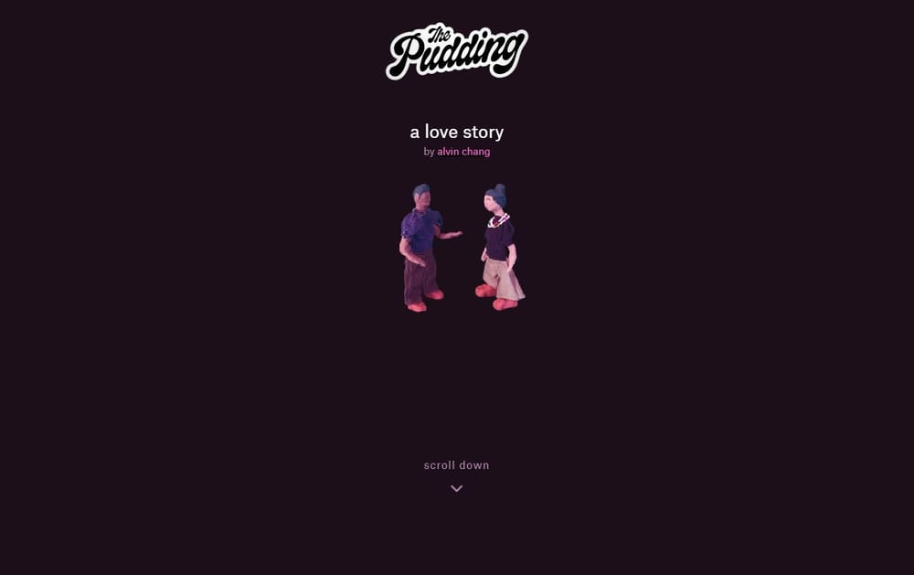
A Love Story
The Pudding · source
Steal: the entry frame — two tiny figures on a near-black field, small title, nothing else. It shows you something before it asks you for anything.
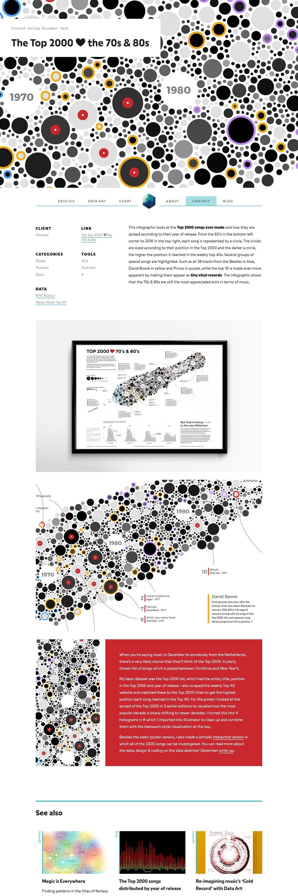
The Top 2000 ❤ the 70s & 80s
Nadieh Bremer · source
Steal: thousands of individually-sized units packed into one field where the eye still finds one unit to land on — and time is the layout, not an axis.
C3 forbids simplifying the palette. These are four different answers to "many categories, still legible".
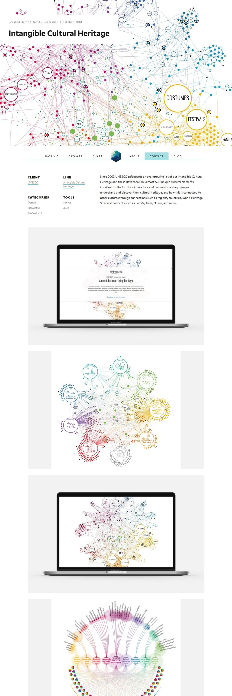
Intangible Cultural Heritage
Nadieh Bremer / UNESCO · source
Steal: a large category set kept separable by hue family plus position, on a light ground. Proof a fine partition need not turn to mud.
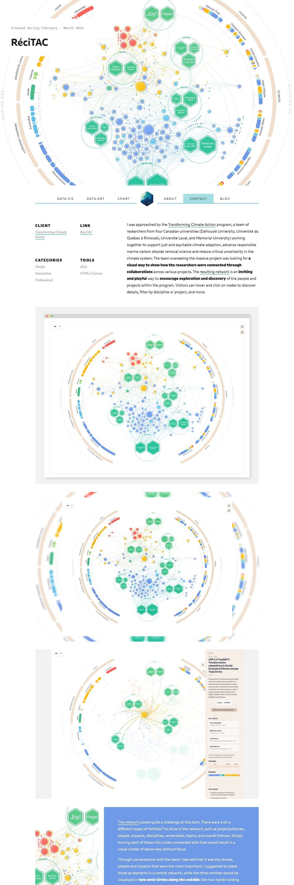
RéciTAC
Nadieh Bremer · source
Steal: many-category colour that stays calm — close-valued, slightly muted hues that still separate cleanly at small size.
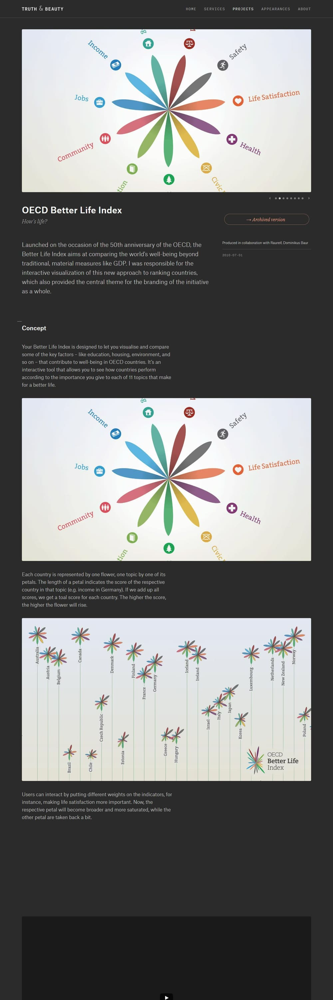
OECD Better Life Index
Truth & Beauty · source
Steal: the legend and the mark are the same object — each petal is its category. Nothing stands in for the mark.
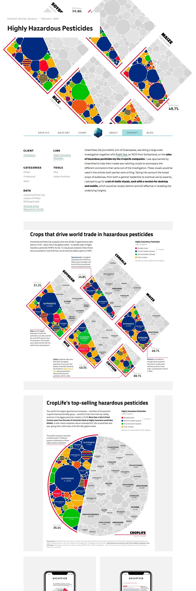
Highly Hazardous Pesticides
Nadieh Bremer / Greenpeace · source
Steal: flat saturated blocks at poster scale — a fine partition is allowed to be loud, not only tasteful.
The ground is a real decision here, not a default: translucent overdraw is the entire render budget, and blend mode behaves differently on black than on paper.
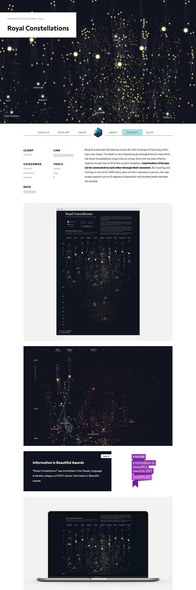
Royal Constellations
Nadieh Bremer · source
Steal: how little ink a near-black ground needs. Sparse points at low density still read as one continuous field.
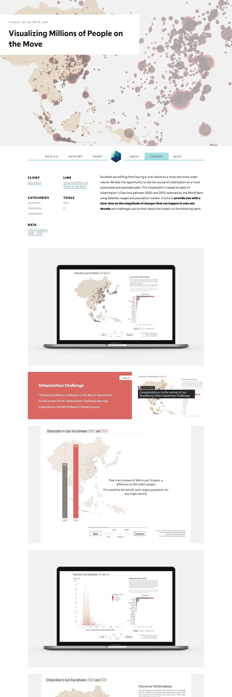
Visualizing Millions of People on the Move
Nadieh Bremer / World Bank · source
Steal: density as ink on cream — overlapping translucent blots that stay readable instead of compounding to sludge.
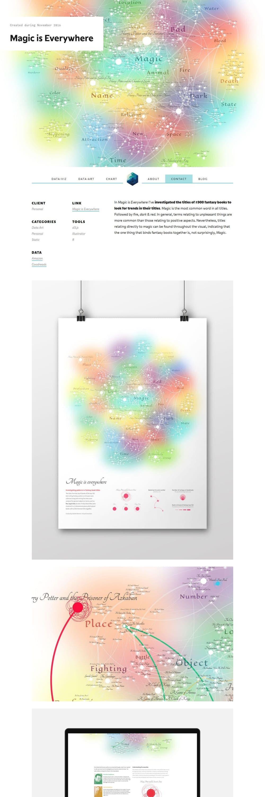
Magic is Everywhere
Nadieh Bremer · source
Steal: soft glow fields on white — colour used as atmosphere rather than as a key, on the ground where that is hardest.
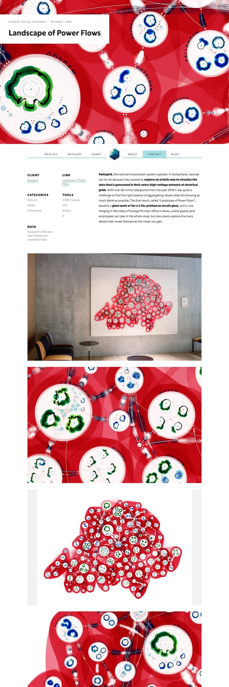
Landscape of Power Flows
Nadieh Bremer / Swissgrid · source
Steal: a saturated non-white ground carrying an entire piece. Black and white are not the only two options on the table.
The spine has to land before any interaction. These are entry frames and page chrome that refuse to compete with the graphic.
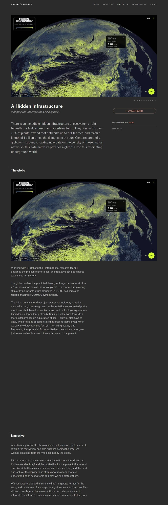
A Hidden Infrastructure
Truth & Beauty / SPUN · source
Steal: one object, full-bleed, almost no words above the fold — the page trusts the image to hold you.
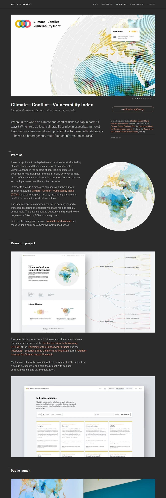
Climate—Conflict—Vulnerability Index
Truth & Beauty · source
Steal: premium restraint in the chrome — small type, generous air, one mark. The site never raises its voice over the graphic.
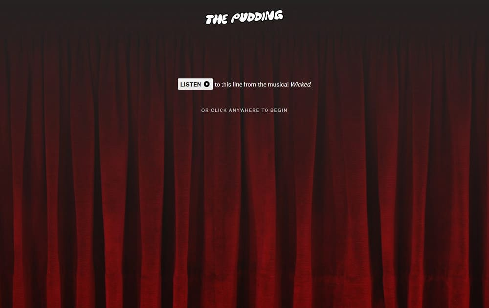
Musical Motifs
The Pudding · source
Steal: a wordless entry frame that sets a mood before a single number appears.
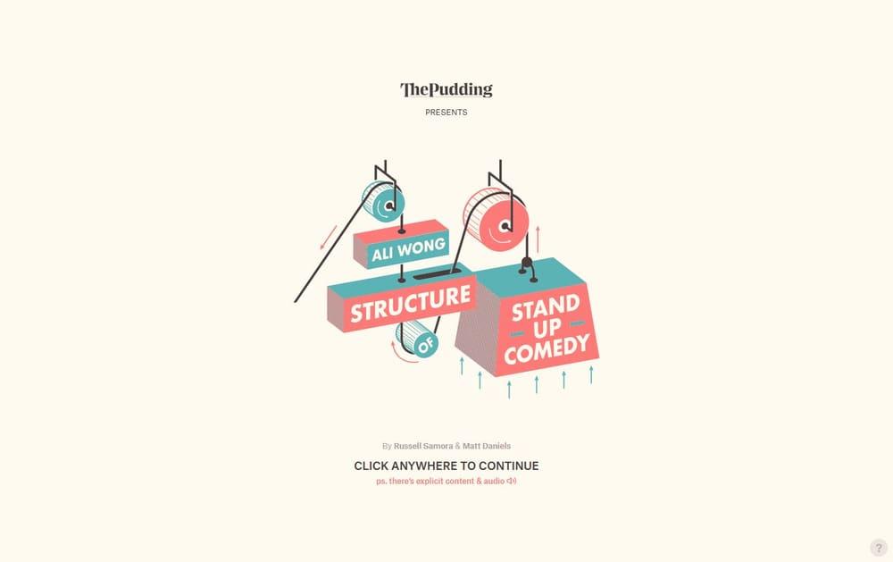
The Structure of Stand-up
The Pudding · source
Steal: the opposite ground — cream, illustrated, one instruction. The entry frame is its own design decision and it does not have to be dark.
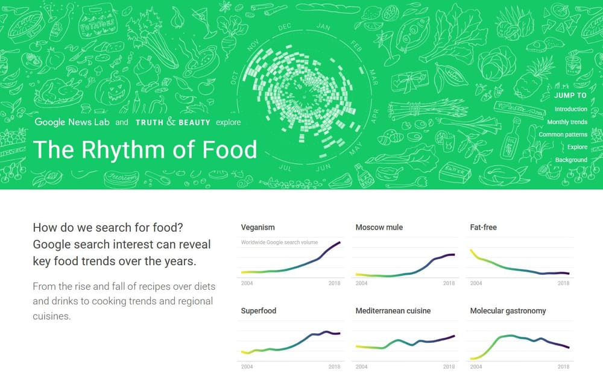
The Rhythm of Food
Truth & Beauty / Google News Lab · source
Steal: the year-clock in the masthead — a cycle drawn so the shape of the cycle is the mark. The only structural cousin the spine has: a bounded, repeating unit of time as a whole object.
Four frames generated with gpt-image-1 for the one thing no existing reference shows: a rope of individual day-threads that is tight at one hour and frayed at another. These are texture and feeling only. They are not mockups, they encode no data, and every caption states what the frame gets wrong so it cannot be read as a spec.
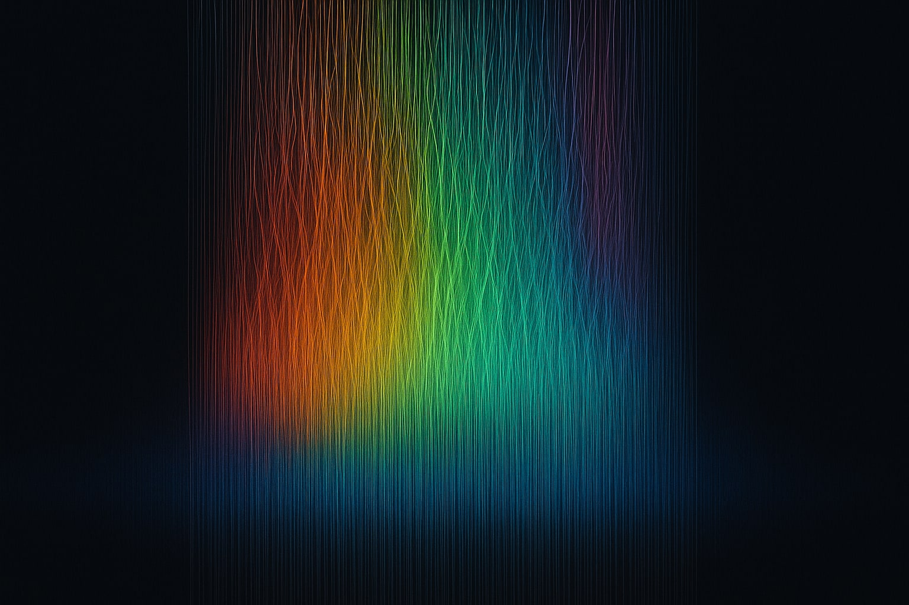
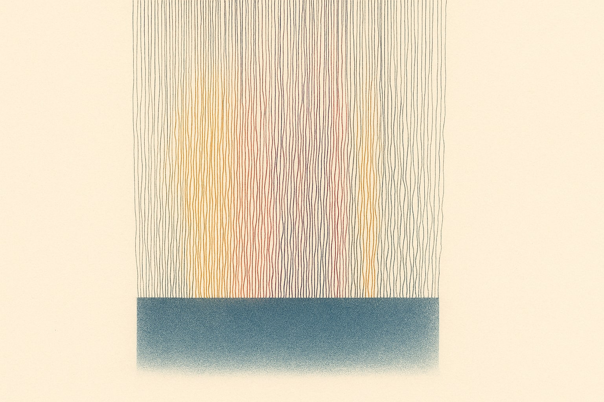
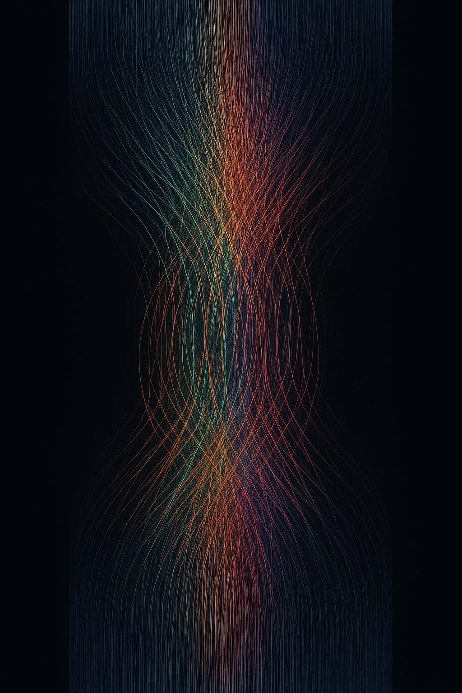
Three things it must not look like. Each is here for a reason that traces to a locked decision, not to taste.
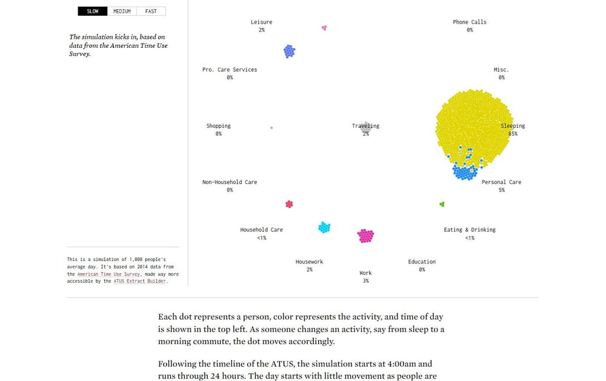
A Day in the Life of Americans — the dot simulation
Nathan Yau / FlowingData, 2015 · source
Why not: same dataset, and the most-shared piece in this space — a remake reads as a remake. Structurally it also fails this spine: it makes you wait for the day to play, while the claim has to land in five seconds and hold still; and each dot is a token in a simulation, not a real diary day you can pull out.
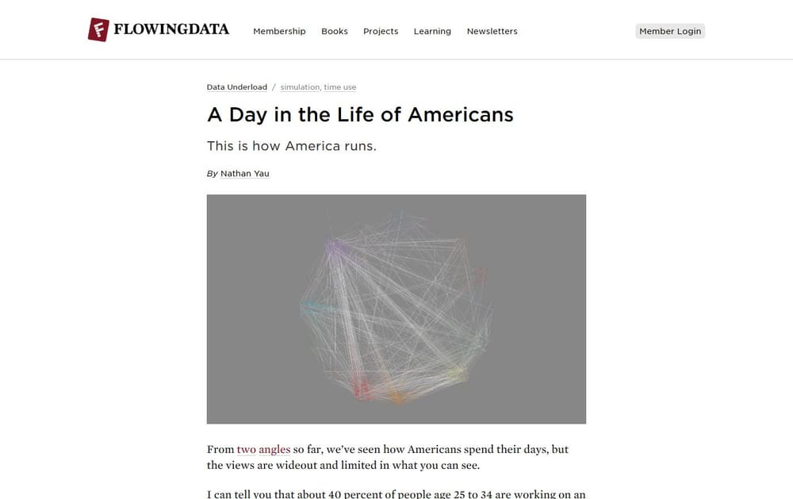
The activity-transition hairball
Nathan Yau / FlowingData · source
Why not: tangle without structure reads as noise. This piece fails the wordless test on sight — you cannot tell the ordered end from the disordered end, which is the only thing the viewer has to see.
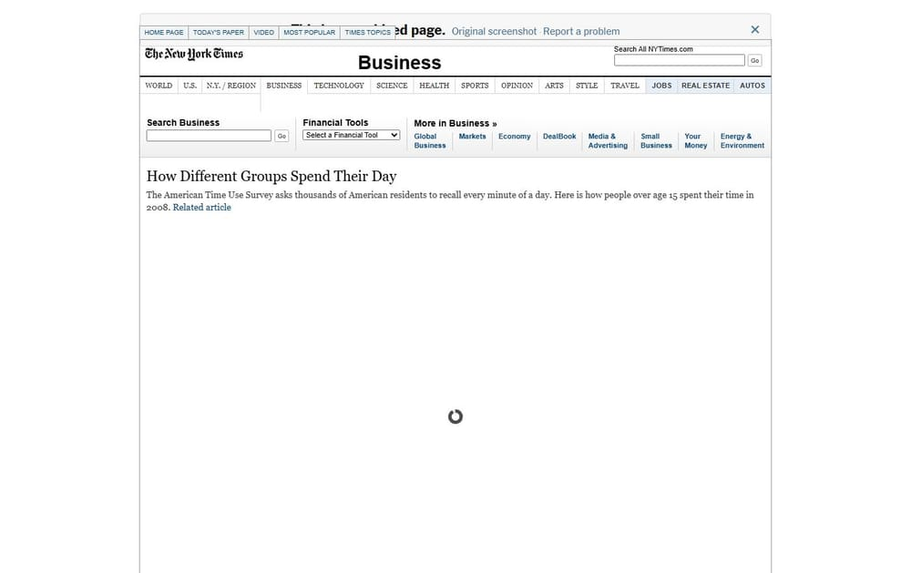
How Different Groups Spend Their Day
The New York Times, 2009 · source
Why not: the canonical ATUS chart — a stacked area that aggregates every person into smooth bands, which destroys the fray (the claim) and the single thread (the exploration layer) in one move. The screenshot is also the honest part: the interactive is a dead Flash object today. That is the expected chart's afterlife.
And one with no image: a decorative neon particle field — glow, swirl, no data mapping. It is the AI-artifact tell, and here every strand on screen has to be one real diary day.
Ticket 08 · One Day in America · sources captured 2026-08-10 with headless Chrome; images are screenshots of the linked pages, held here for design reference only. Mood frames M1–M4 generated with gpt-image-1 — synthetic, no data.
{kind=link}
{kind=link}
{kind=link}
{kind=link}
{kind=link}
{kind=link}
{kind=link}
{kind=link}
{kind=link}
{kind=link}
{kind=link}
{kind=link}
{kind=link}
{kind=link}
{kind=link}
{kind=link}
{kind=link}
{kind=link}
{kind=link}
{kind=link}
{kind=link}
{kind=link}
{kind=link}
{kind=link}
{kind=link}